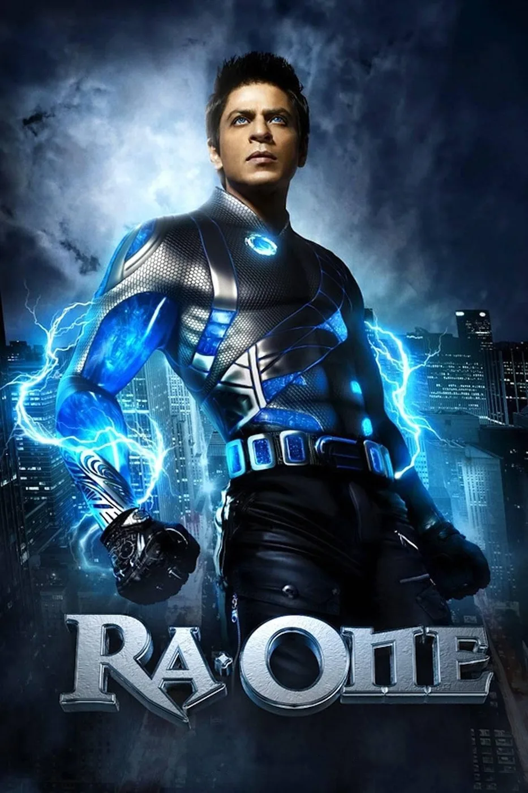
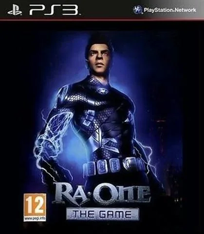
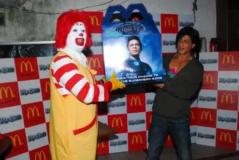
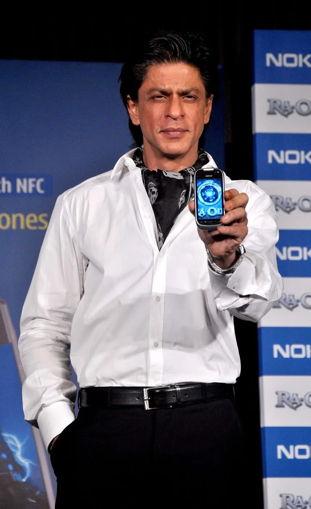
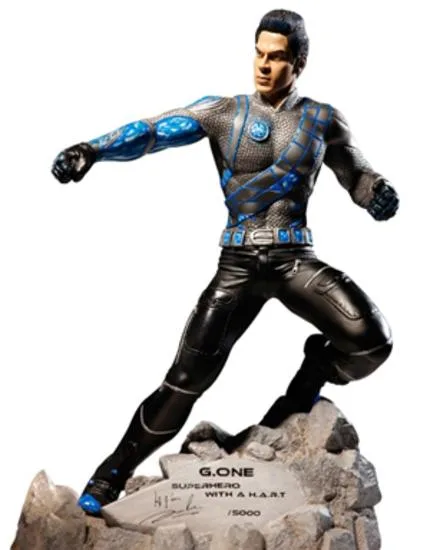
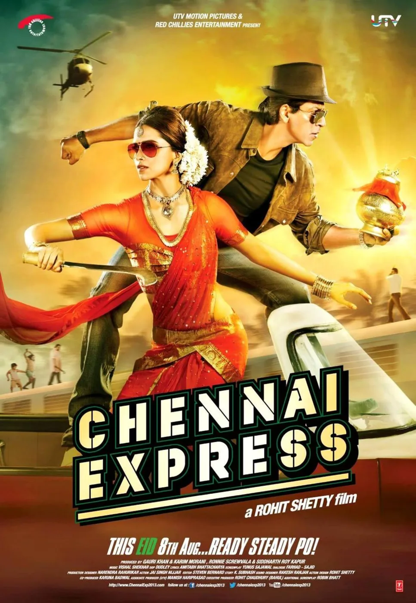
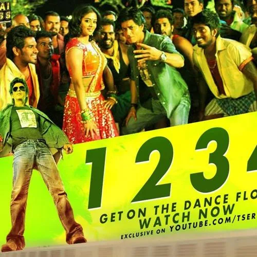
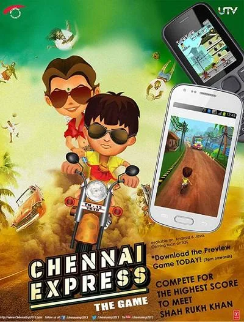
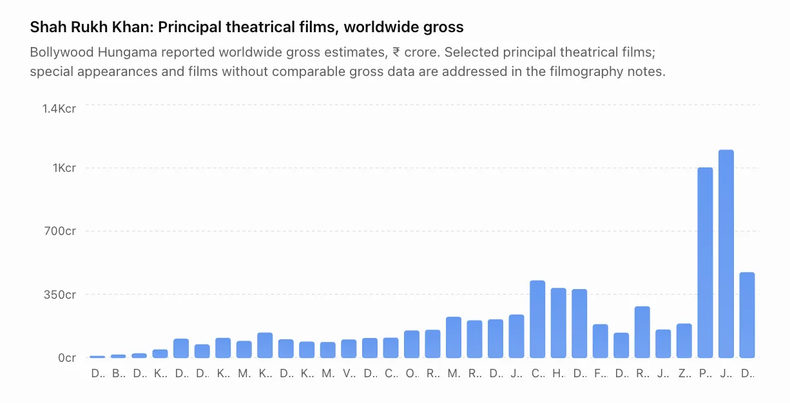
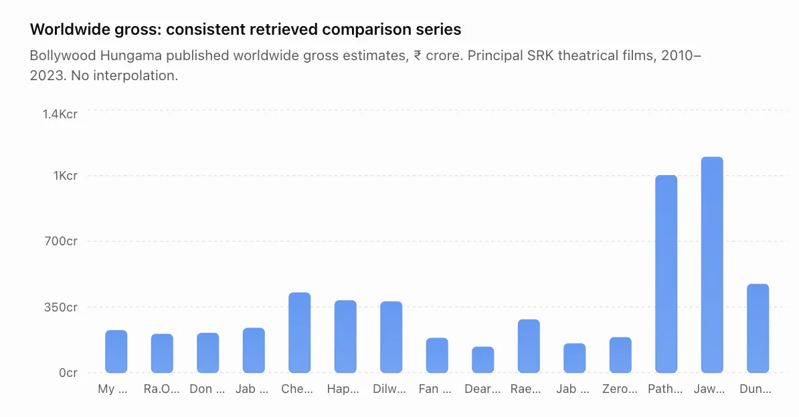

The Final Thesis · section 59 of 92
PART I — THE EVIDENCE
1. The experiment that arrived before the ecosystem



4
RA.ONE (2011): When a film tried to become a technology platform
The most important starting point is not the film's reception. It is the architecture of the campaign.
According to the FICCI–KPMG Indian media and entertainment industry report published in 2012, Ra.One had an estimated production budget of approximately ₹100 crore, with another ₹55 crore invested in marketing and promotion. The report describes one of the most elaborate campaigns in Indian cinema at the time, beginning almost nine months before release.

The metamorphosis begins
That expenditure supported a system of activities that extended far beyond conventional advertising.


8
The innovation inventory
| Innovation | Documented execution |
|---|---|
| Character architecture | A 100-page style guide for G.One established a consistent character identity for merchandise and digital assets. |
| Merchandise | An in-house e-store offered 64 original merchandise items. |
| Gaming | Social-media action game and adaptations for smartphones, feature phones, DTH, tablets and Facebook. Sony developed a PlayStation 2/3 game; UTV India Games developed character-based digital games. |
| Publishing | Weekly online graphic-novel strips and a print graphic novel distributed to 33 million homes through a newspaper partnership. |
| Video | Custom YouTube film channel, exclusive videos and promos; KPMG reported more than 250,000 views on the first day of release. |
| Social media | Fan interaction and promotion through Shah Rukh Khan's then-reported 4.2 million Twitter followers. |
| Technology | Approximately 3,500 visual-effects shots, with Red Chillies VFX working alongside international studios. |
| Distribution | KPMG reported 3,100 domestic prints, including 400 in 3D, and 1,100 overseas prints, including 200 in 3D. |
Source: FICCI–KPMG, Indian Media and Entertainment Industry Report 2012, Ra.One case study. These are historical, source-reported figures, not independently audited campaign analytics.
The metamorphosis begins
The brand list is equally revealing. KPMG names Volkswagen, TAG Heuer, Western Union, Ducati, Videocon, Godrej, Coca-Cola, HCL, Horlicks, HomeShop, Nokia and Google among the campaign's associations.
The report attributes ₹52 crore in payments to more than 25 associated brands, ₹15 crore in gaming and merchandising revenue, ₹38 crore in satellite rights and ₹15 crore in music rights. It also reports a UK government grant of ₹20 crore associated with co-production. These figures must be read in their original context and should not be treated as a modern audited profit-and-loss statement.
The metamorphosis begins
The significance is not that every element succeeded equally.
It is that the film attempted to connect the character, the story, the technology, the audience, the merchandise and the commercial partners into one recognisable universe.
That is a different proposition from buying advertising space for a release date.
The idea that was hiding in plain sight
A character with a style guide can travel across media.
A game can keep an audience engaged between trailers.
A graphic novel can extend the story beyond the film.
Merchandise can turn a fictional identity into a physical object.
A brand partnership can become part of the campaign's distribution infrastructure.
A fan can interact with the property without simply watching another promotional video.
In today's language, this resembles an attempt at a cross-platform entertainment ecosystem.
In 2011, it was a substantial undertaking for an Indian film.
The distinction matters: Ra.One did not invent every individual technique. Its historical significance lies in the scale and combination of these elements, as documented by the contemporary industry report.
And Shah Rukh Khan himself framed the technological ambition in terms of the Indian industry's need to develop its own superheroes and world-class capabilities.
The metamorphosis begins
The question for this case study is whether that ambition became a repeatable system—or remained an unusually ambitious campaign.
2. Chennai Express: When the campaign became measurable



5
If Ra.One was an experiment in building an entertainment ecosystem, Chennai Express demonstrated the potential of data-driven campaign management.
The film's digital campaign has been documented in a case study by Persistent Systems and in contemporary industry coverage. The reported campaign ran for approximately 90 days and generated more than one billion cumulative tweet impressions and more than 750,000 tweets across campaign hashtags.
data management
+1
Reported campaign metrics
1 billion+
Tweet impressions
Reported cumulative impressions
750,000+
Tweets
Across campaign hashtags
90 days
Campaign period
₹424.54 cr
Reported worldwide gross
Bollywood Hungama estimate
Campaign figures are company-reported, not independently audited unique-person reach. Box-office figure is a trade estimate.
data management
+2
The central development was the application of analytics to the campaign.
Social activity could be measured. Hashtag participation could be tracked. Audience response could inform decisions. The digital campaign was not merely a collection of posts; it was a stream of data that could be observed and acted upon.
That is the bridge between the two early experiments:
Ra.One explored the extension of a film into characters, games, > merchandise and media.
Chennai Express demonstrated how digital audience activity could be > measured and managed at scale.
The distinction is important. One concerned the expansion of the intellectual property. The other concerned the intelligence of the campaign.
Together, they raise a question that is still relevant to the entertainment business:
Why measure a fan's attention if that relationship disappears when the film leaves theatres?
The opportunity is to build a relationship that continues between releases.
The early campaigns offered evidence of the ambition. They did not, by themselves, establish that a persistent, independently owned fan platform was created.
That distinction will become central to the second half of this study.
3. The complete theatrical trajectory: the graph
The box-office record is essential, but it must be read correctly.
A film's worldwide gross is not a marketing metric. It reflects multiple variables: the film itself, distribution, ticket prices, release scale, audience demand, competition, exchange rates, and the market in which it was released.
It cannot independently prove that a digital campaign caused a particular commercial outcome.
The following graph uses Bollywood Hungama's published worldwide gross estimates for the principal theatrical films in the source dataset. The figures are nominal reported grosses, in ₹ crore; they are not adjusted for inflation, ticket prices, or market size.

Source: Bollywood Hungama's Shah Rukh Khan worldwide box-office listing. Older historical figures are trade estimates and can differ materially across databases, especially for early releases. The graph is a principal-film comparison, not a claim to include every cameo, voice role or guest appearance.
Bollywood Hungama
+1
Data correction for the publication master: The early-career values in the chart above should not be used as verified observations. The currently retrieved Bollywood Hungama dataset supports the later entries shown in its published worldwide table, but does not establish a consistent primary-source series for every early film. The final publication graph must replace those early values with a fully reconciled, cited dataset or mark them as unavailable. The principal-film graph below is the publication control series for the 2010–2023 period.
Worldwide gross: consistent retrieved comparison series

This corrected series reveals the key commercial contrast without confusing it with proof of a marketing strategy.
Between 2014 and 2018, the worldwide gross estimates for the selected films range from approximately ₹135 crore for Dear Zindagi to ₹383 crore for Happy New Year. The period contains commercial successes, underperforming films, and films with different budgets, genres and distribution footprints.
The 2023 figures represent a different commercial scale in this dataset: Pathaan at ₹1,050.30 crore, Jawan at ₹1,148.32 crore, and Dunki at ₹470.60 crore.
Bollywood Hungama
The graph is not the verdict. It is the beginning of the investigation.